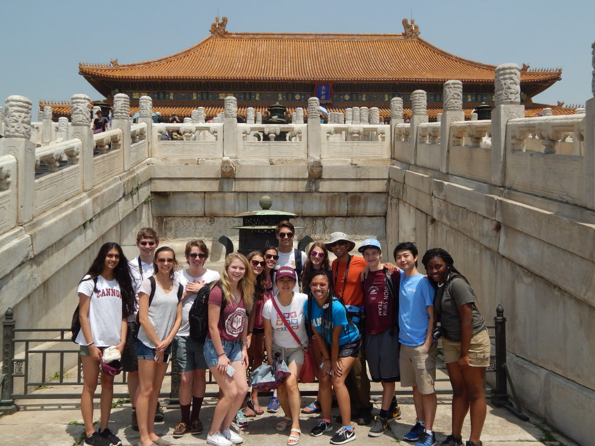
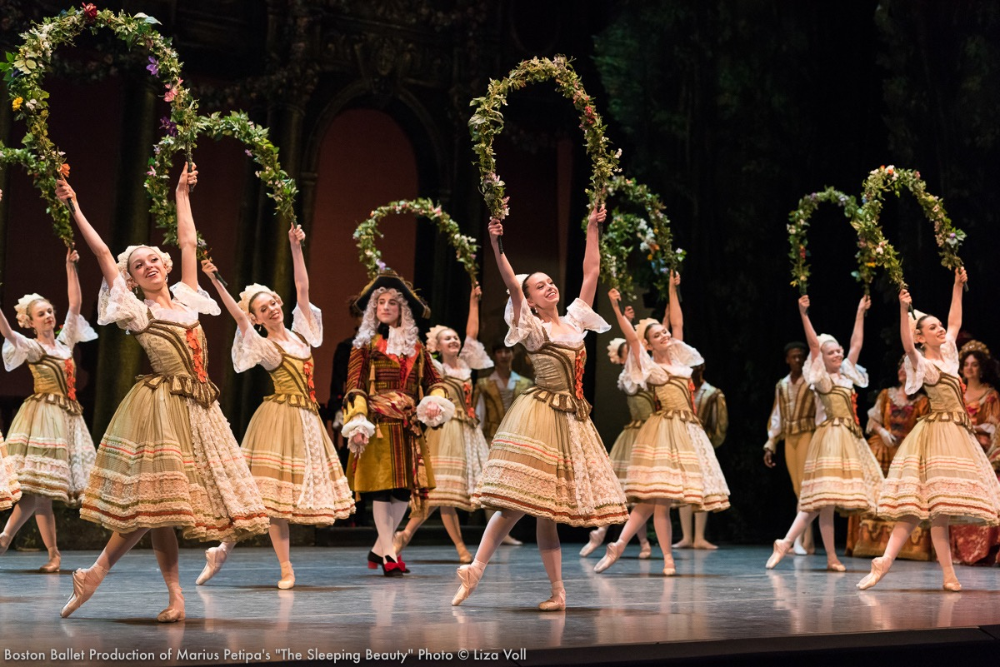

Hello! My name is Catherine Livingston. I grew up in Davidson, NC and attended Cannon School lower through upper school. In upper school, I was very passionate about science and math. My special interest in physics is what sparked my interest in majoring in mechanical engineering. I was also very passionate about learning Chinese, and I was very lucky to be able to visit China during one summer. After school, I enjoyed dancing and spent every summer studying ballet with different schools across the US.
After high school, I signed a contract with Boston Ballet for their 2017-2018 season to become a member of Boston Ballet II. I am very grateful for this time to experience life as a professional ballet dancer.
Currently, I am a sophomore at Duke University studying computer science and mechanical engineering. I am interested in using my degree to work in software engineering. Outside of academics, I am able to continue dancing in a campus organization called Defining Movement. Defining Movement, more commonly known on campus as DefMo, is Duke's premier multicultural dance group that promotes acceptance, unity, and diversity through art.
Duke Basketball
Trip to China
Performance with Boston Ballet